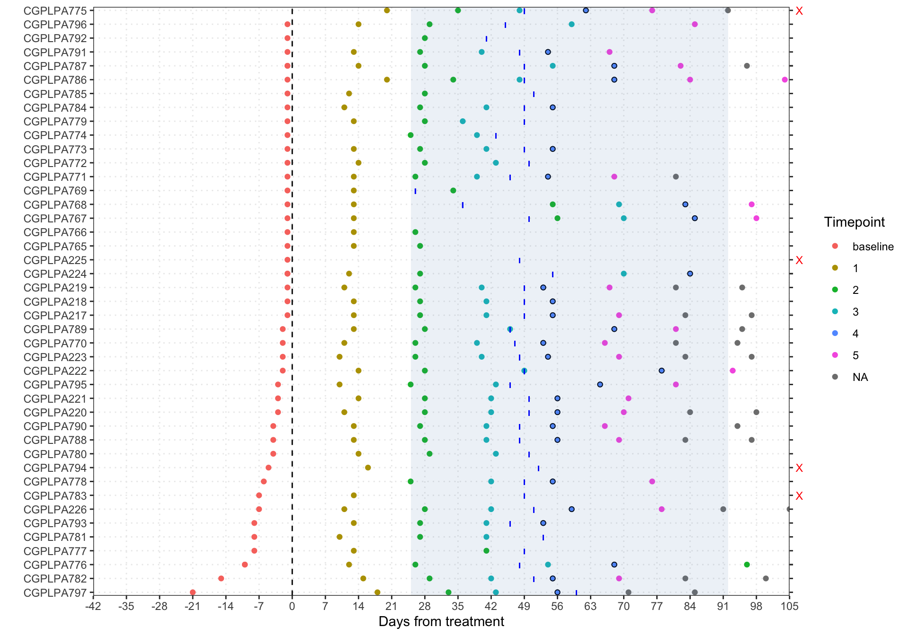

Last updated: 2025-03-27
Checks: 6 1
Knit directory: hruban_wflow/
This reproducible R Markdown analysis was created with workflowr (version 1.7.1). The Checks tab describes the reproducibility checks that were applied when the results were created. The Past versions tab lists the development history.
The R Markdown is untracked by Git. To know which version of the R
Markdown file created these results, you’ll want to first commit it to
the Git repo. If you’re still working on the analysis, you can ignore
this warning. When you’re finished, you can run
wflow_publish to commit the R Markdown file and build the
HTML.
Great job! The global environment was empty. Objects defined in the global environment can affect the analysis in your R Markdown file in unknown ways. For reproduciblity it’s best to always run the code in an empty environment.
The command set.seed(20250319) was run prior to running
the code in the R Markdown file. Setting a seed ensures that any results
that rely on randomness, e.g. subsampling or permutations, are
reproducible.
Great job! Recording the operating system, R version, and package versions is critical for reproducibility.
Nice! There were no cached chunks for this analysis, so you can be confident that you successfully produced the results during this run.
Great job! Using relative paths to the files within your workflowr project makes it easier to run your code on other machines.
Great! You are using Git for version control. Tracking code development and connecting the code version to the results is critical for reproducibility.
The results in this page were generated with repository version 6dc79eb. See the Past versions tab to see a history of the changes made to the R Markdown and HTML files.
Note that you need to be careful to ensure that all relevant files for
the analysis have been committed to Git prior to generating the results
(you can use wflow_publish or
wflow_git_commit). workflowr only checks the R Markdown
file, but you know if there are other scripts or data files that it
depends on. Below is the status of the Git repository when the results
were generated:
Ignored files:
Ignored: .DS_Store
Untracked files:
Untracked: README.Rmd
Untracked: analysis/ext-fig1.Rmd
Untracked: analysis/ext-fig10.Rmd
Untracked: analysis/ext-fig11.Rmd
Untracked: analysis/ext-fig12.Rmd
Untracked: analysis/ext-fig13.Rmd
Untracked: analysis/ext-fig14.Rmd
Untracked: analysis/ext-fig15.Rmd
Untracked: analysis/ext-fig16a.Rmd
Untracked: analysis/ext-fig16b.Rmd
Untracked: analysis/ext-fig17.Rmd
Untracked: analysis/ext-fig18.Rmd
Untracked: analysis/ext-fig19.Rmd
Untracked: analysis/ext-fig20.Rmd
Untracked: analysis/ext-fig21a.Rmd
Untracked: analysis/ext-fig21b.Rmd
Untracked: analysis/ext-fig22a.Rmd
Untracked: analysis/ext-fig22b.Rmd
Untracked: analysis/ext-fig23a.Rmd
Untracked: analysis/ext-fig23b.Rmd
Untracked: analysis/ext-fig24.Rmd
Untracked: analysis/ext-fig2a.Rmd
Untracked: analysis/ext-fig2b.Rmd
Untracked: analysis/ext-fig3.Rmd
Untracked: analysis/ext-fig4.Rmd
Untracked: analysis/ext-fig5.Rmd
Untracked: analysis/ext-fig6.Rmd
Untracked: analysis/ext-fig7.Rmd
Untracked: analysis/ext-fig8.Rmd
Untracked: analysis/ext-fig9.Rmd
Untracked: analysis/fig1a.Rmd
Untracked: analysis/fig1b.Rmd
Untracked: analysis/fig2a.Rmd
Untracked: analysis/fig2b.Rmd
Untracked: analysis/fig2c.Rmd
Untracked: analysis/fig3a.Rmd
Untracked: analysis/fig3b.Rmd
Untracked: analysis/fig4.Rmd
Untracked: analysis/fig5.Rmd
Untracked: analysis/fig6a.Rmd
Untracked: analysis/fig6b.Rmd
Untracked: analysis/fig6c.Rmd
Untracked: analysis/fig7a.Rmd
Untracked: analysis/fig7b.Rmd
Untracked: analysis/fig8.Rmd
Untracked: analysis/fig9a.Rmd
Untracked: analysis/fig9b.Rmd
Untracked: code/functions.R
Untracked: code/hr_plot_funcs.R
Untracked: code/liver.tools/
Untracked: code/pivot_wider_pacto.R
Untracked: code/process_ab.Rmd
Untracked: code/process_tcga_beta.Rmd
Untracked: code/rlucas/
Untracked: code/useful.stuff.aa/
Untracked: code/utility_funcs.R
Untracked: data/120122_mutations.csv
Untracked: data/CA199.csv
Untracked: data/CP_PAC_artemis.xlsx
Untracked: data/CheckPAC_clinical_annotated011622.xlsx
Untracked: data/Checkpac_Test.csv
Untracked: data/Expected.csv
Untracked: data/ID_comparison.xlsx
Untracked: data/Locked_Models/
Untracked: data/PACTO Masterfile.xlsx
Untracked: data/PACTO_BL_EOT_EOS_PFS_TA_jh.xlsx
Untracked: data/Test_set_pacto.csv
Untracked: data/allfeatures_pacto.5mb.hg19.csv
Untracked: data/artemis.csv
Untracked: data/barv1.csv
Untracked: data/cellularity.csv
Untracked: data/checkpac_5mb_bins/
Untracked: data/checkpac_baseline_p2_dates.csv
Untracked: data/checkpac_bins.csv
Untracked: data/checkpac_ca199.csv
Untracked: data/checkpac_ca199_baseline_p4_dates.csv
Untracked: data/checkpac_features.csv
Untracked: data/checkpac_plasma_manifest.xlsx
Untracked: data/clinical_073123.xlsx
Untracked: data/combined_bins_102324.rds
Untracked: data/df_results_CAIRO5_2_6_ checkpac_ pacto.tsv
Untracked: data/estimates/
Untracked: data/fig2c_p2_data.rds
Untracked: data/for_leal_plot_042324.xlsx
Untracked: data/fp2_lucas_healthy.csv
Untracked: data/i07_input.xlsx
Untracked: data/loadings.rds
Untracked: data/long_bins.csv
Untracked: data/pacto_5mb_bins/
Untracked: data/pacto_bins.csv
Untracked: data/pacto_features.csv
Untracked: data/sel_chr.txt
Untracked: data/supplementary_tables.xlsx
Untracked: data/tumor_tmb.txt
Untracked: extdata/
Untracked: output/process_tcga_beta.Rmd/
Unstaged changes:
Modified: .gitignore
Modified: README.md
Modified: analysis/about.Rmd
Modified: analysis/index.Rmd
Modified: analysis/license.Rmd
Note that any generated files, e.g. HTML, png, CSS, etc., are not included in this status report because it is ok for generated content to have uncommitted changes.
There are no past versions. Publish this analysis with
wflow_publish() to start tracking its development.
Blue lines indicate the date of CT. Red-X indicates patients dropped due to missing sample. The highlighted blue region is the 0.05-0.95 Quantiles of timepoint selection. Fourth follow up CA19-9 timepoints were selected as follow-up, which are outlined in black. In the legend, timepoint (baseline, 1-5 or NA) indicates follow up CA19-9 sample number.
library(data.table)
library(here)
library(lubridate)
library(readxl)
library(tidyverse)
source(here("code/utility_funcs.R"))NOTE: it’s better to move this code to
code and refer to its output in analysis and drop the copy
from data
# Load the master ID map file - from Carlie
id_map <- read_excel(here("data/ID_comparison.xlsx")) %>%
select(cgid = CGID, subject_id = StudySubjectID) %>%
mutate(patient_id = gsub("P[0-9]{0,2}$", "", cgid)) %>%
select(-cgid)
# Load the blood draw dates
mfst <- read.csv(here("data/checkpac_ca199.csv")) %>%
mutate(visit_cycle = ifelse(lab_suffix == "E1_C4",
"baseline",
as.character(cyclenumber - 1)),
ca199 = ifelse(ca199 == -999, NA, ca199),
subject_id = str_pad(subject_id, 3, "left", "0"),
lab_date = as.Date(lab_date)) %>%
select(-c(lab_suffix, cyclenumber)) %>%
drop_na()
# Load the clinical data
# Keep the treatment start date, imaging date and blood draw dates
clin_data <- read_excel(here("data/clinical_073123.xlsx"),
sheet = "CheckPAC_DATA4_OSupdate_tojh") %>%
select(subject_id = StudySubjectID,
tx_start_date = Nivo_StartDate,
starts_with("IT_0_")) %>%
rename(ct_flwup_date = IT_0_E4_C19_1)
# Fill the missing imaging date with the next available date
# this is based on my examination of the data
# Find the next available date
ct_missing_fill <- clin_data %>%
select(subject_id, starts_with("IT_0_")) %>%
pivot_longer(cols = -subject_id,
names_to = "visit_id", values_to = "visit_date") %>%
filter(visit_date != "#NULL!") %>%
distinct(subject_id, .keep_all = TRUE)
ct_missing_fill_names <- ct_missing_fill$subject_id
ct_missing_fill <- ct_missing_fill$visit_date
names(ct_missing_fill) <- ct_missing_fill_names
# Fill the dates that are missing
clin_data <- clin_data %>%
mutate(ct_flwup_date = ifelse(ct_flwup_date == "#NULL!",
ct_missing_fill[subject_id], ct_flwup_date)) %>%
select(-starts_with("IT_0_"))
# Combine the plasma manifest with the clinical data
all_data <- inner_join(clin_data, id_map, by = "subject_id") %>%
inner_join(mfst, by = "subject_id")
for (i in colnames(all_data)) {
if (str_detect(i, "[Dd]ate")) {
if (!(any(class(all_data[[i]]) == "POSIXt") || (class(all_data[[i]]) == "Date"))) {
all_data[[i]] <- as.Date(as.numeric(all_data[[i]]), origin = "1899-12-30")
} else {
all_data[[i]] <- as.Date(all_data[[i]])
}
}
}# Compute days from the treatment
all_data2 <- all_data %>%
mutate(days_from_tx = as.numeric(difftime(lab_date, tx_start_date,
units = "days")),
days_btw_tx_ct = as.numeric(difftime(ct_flwup_date, tx_start_date,
units = "days")))
# Order patients based on baseline blood draw date
patient_order <- all_data2 %>%
group_by(patient_id) %>%
summarize(order_baseline = min(days_from_tx, na.rm = TRUE)) %>%
ungroup() %>%
arrange(order_baseline) %>%
pull(patient_id)
# Select P2 dates for on-treatment
date_blp2s <- all_data2 %>%
group_by(patient_id) %>%
summarize(patient_id = patient_id[1],
tx_start_date = tx_start_date[1],
ct_flwup_date = ct_flwup_date[1],
baseline = get_baseline(lab_date, tx_start_date),
endpoint = get_p2(lab_date, visit_cycle),
ct_flwup = ifelse(all(is.na(ct_flwup_date)), FALSE, TRUE)) %>%
ungroup()Warning: Returning more (or less) than 1 row per `summarise()` group was deprecated in
dplyr 1.1.0.
ℹ Please use `reframe()` instead.
ℹ When switching from `summarise()` to `reframe()`, remember that `reframe()`
always returns an ungrouped data frame and adjust accordingly.
Call `lifecycle::last_lifecycle_warnings()` to see where this warning was
generated.`summarise()` has grouped output by 'patient_id'. You can override using the
`.groups` argument.attach(date_blp2s)
dmin <- quantile(as.numeric(endpoint-tx_start_date), p=0.05, na.rm=TRUE)
dmax <- quantile(as.numeric(endpoint-tx_start_date), p=0.95, na.rm=TRUE)
detach(date_blp2s)
#dir.create("output")
#write.csv(date_blp2s, "output/checkpac_baseline_p2_dates.csv", quote=FALSE, row.names=FALSE)blp2s <- date_blp2s %>%
select(patient_id, baseline, endpoint) %>%
pivot_longer(-patient_id,
names_to = "timepoint", values_to = "date_blood_draw")
blp2_avail <- date_blp2s %>%
mutate(baseline = ifelse(!is.na(baseline), TRUE, FALSE),
endpoint = ifelse(!is.na(endpoint), TRUE, FALSE)) %>%
mutate(keep_patient = baseline & endpoint) %>%
#mutate(keep_patient = endpoint) %>%
select(patient_id, keep_patient) %>%
mutate(selection = ifelse(keep_patient, "", "X")) %>%
mutate(patient_id = factor(patient_id, levels = patient_order),
patient_yc = as.numeric(patient_id))
all_data3 <- all_data2 %>%
rename(date_blood_draw = lab_date) %>%
left_join(blp2s) %>%
mutate(twomonth_mark = ifelse(visit_cycle == "4", 1, NA)) %>%
mutate(patient_id = factor(patient_id, levels = patient_order),
patient_yc = as.numeric(patient_id),
visit_cycle = factor(visit_cycle,
levels = c("baseline", 1, 2, 3, 4, 5))) %>%
mutate(selected = ifelse(timepoint %in% c("baseline", "endpoint"), 1,
ifelse(is.na(visit_cycle), 0, 0.3)))Joining with `by = join_by(patient_id, date_blood_draw)`ggplot() +
geom_point(data = all_data3, aes(x = days_from_tx, y = patient_yc,
color = visit_cycle)) +
geom_point(data = all_data3, aes(x = days_from_tx, y = patient_yc,
shape = twomonth_mark)) +
scale_shape_identity() +
geom_vline(xintercept = 0, linetype = "dashed") +
geom_segment(data = all_data3,
aes(x = days_btw_tx_ct, xend = days_btw_tx_ct,
y = patient_yc - 0.25, yend = patient_yc + 0.25),
linetype = "dashed", color = "blue") +
geom_rect(aes(xmin = dmin, xmax = dmax, ymin = -Inf, ymax = Inf),
fill = "steelblue", alpha = 0.1) +
scale_x_continuous(breaks = seq(-42, 119, 7), labels = seq(-42, 119, 7),
expand = c(0, 0)) +
scale_y_continuous(breaks = sort(unique(all_data3$patient_yc)),
labels = levels(all_data3$patient_id),
sec.axis = sec_axis(~., breaks = blp2_avail$patient_yc,
labels = blp2_avail$selection),
expand = c(0, 0)) +
coord_cartesian(xlim = c(-42, 105)) +
labs(x = "Days from treatment", y = "", title = NULL) +
theme_bw() +
theme(axis.text.y.right = element_text(color = "red"),
panel.grid.major.x = element_line(linetype = 3),
panel.grid.major.y = element_line(linetype = 3),
panel.grid.minor.x = element_blank(),
panel.grid.minor.y = element_blank()) +
guides(color = guide_legend(title = "Timepoint"),
alpha = "none")Warning: Removed 324 rows containing missing values or values outside the scale range
(`geom_point()`).Warning: Removed 6 rows containing missing values or values outside the scale range
(`geom_segment()`).
sessionInfo()R version 4.4.1 (2024-06-14)
Platform: aarch64-apple-darwin20
Running under: macOS 15.3.1
Matrix products: default
BLAS: /Library/Frameworks/R.framework/Versions/4.4-arm64/Resources/lib/libRblas.0.dylib
LAPACK: /Library/Frameworks/R.framework/Versions/4.4-arm64/Resources/lib/libRlapack.dylib; LAPACK version 3.12.0
locale:
[1] en_US.UTF-8/en_US.UTF-8/en_US.UTF-8/C/en_US.UTF-8/en_US.UTF-8
time zone: America/New_York
tzcode source: internal
attached base packages:
[1] stats graphics grDevices utils datasets methods base
other attached packages:
[1] forcats_1.0.0 stringr_1.5.1 dplyr_1.1.4 purrr_1.0.4
[5] readr_2.1.5 tidyr_1.3.1 tibble_3.2.1 ggplot2_3.5.1
[9] tidyverse_2.0.0 readxl_1.4.5 lubridate_1.9.4 here_1.0.1
[13] data.table_1.17.0 workflowr_1.7.1
loaded via a namespace (and not attached):
[1] sass_0.4.9 generics_0.1.3 stringi_1.8.4 hms_1.1.3
[5] digest_0.6.37 magrittr_2.0.3 evaluate_1.0.3 grid_4.4.1
[9] timechange_0.3.0 fastmap_1.2.0 cellranger_1.1.0 rprojroot_2.0.4
[13] jsonlite_1.9.1 processx_3.8.6 whisker_0.4.1 ps_1.9.0
[17] promises_1.3.2 httr_1.4.7 scales_1.3.0 jquerylib_0.1.4
[21] cli_3.6.4 crayon_1.5.3 rlang_1.1.5 munsell_0.5.1
[25] withr_3.0.2 cachem_1.1.0 yaml_2.3.10 tools_4.4.1
[29] tzdb_0.4.0 colorspace_2.1-1 httpuv_1.6.15 vctrs_0.6.5
[33] R6_2.6.1 lifecycle_1.0.4 git2r_0.35.0 fs_1.6.5
[37] pkgconfig_2.0.3 callr_3.7.6 pillar_1.10.1 bslib_0.9.0
[41] later_1.4.1 gtable_0.3.6 glue_1.8.0 Rcpp_1.0.14
[45] xfun_0.51 tidyselect_1.2.1 rstudioapi_0.17.1 knitr_1.49
[49] farver_2.1.2 htmltools_0.5.8.1 rmarkdown_2.29 compiler_4.4.1
[53] getPass_0.2-4